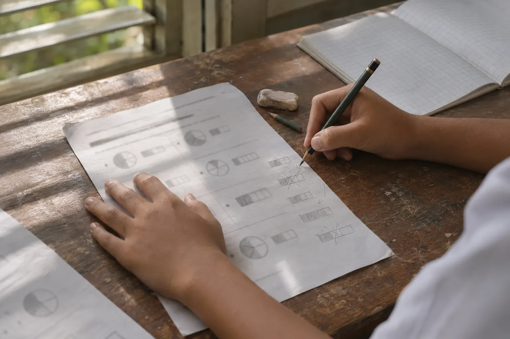

Why PINTAR
Educational decisions deserve evidence.
The most important questions in a class are rarely answered by numbers alone: which parts have been mastered, who needs help, and what should happen next. PINTAR helps answer them, from the learning objective to the next teaching step.
- 01 Learning objective What learners should be able to do.
- 02 Evidence Answers from the Initial Mapping, practice and the Mastery Check.
- 03 Educator judgement The educator reads the evidence alongside what they know of the class.
- 04 Next teaching step What to revisit, for whom, and what to move on to.
01The problem
Three things that make evidence hard to use.

- 01
A score records an outcome, not its cause.
Two learners with the same score may struggle with different parts, and need different help.
- 02
A little data is easily misread.
When only a few people have taken a test, an average can look low or high for no real reason.
- 03
The learning record breaks easily.
When people change class, change school or change roles, their learning history often stays behind.
02The learning philosophy
Diagnose, guide, learn, assess, explain, verify, improve.
Each stage answers one question, and its answer becomes evidence for the next. Then the cycle begins again.
- 01 Diagnose What is already known? The Initial Mapping shows what learners already know.
- 02 Guide Where should learning start? A Personal Reading Map suggests where to start reading.
- 03 Learn How do I understand it? Lessons and practice, with step-by-step help when needed.
- 04 Assess Has it been mastered? A Mastery Check, with its rules shown before it starts.
- 05 Explain What does it mean? Reports explain the results, and say so when there is not yet enough data.
- 06 Verify Can it be trusted? Results trace back to the material and rules used; a certificate’s authenticity can be checked.
- 07 Improve What comes next? Educators decide what to revisit and what to move on to.
- Back to the startwith new evidence, to Diagnose.
03Principles
Honest about what is known, and what is not yet.
Average % of answers correct, Mastery Check
72%
From the 22 of 24 learners who have taken it.
Enough data: the figure is shown.
Average % of answers correct, Mastery Check
—
Only 4 of 24 learners have taken it.
Not enough data: the report says “Not enough data to show this figure yet.”
Educators make the decisions.
PINTAR shows the evidence and its limits. Decisions about learners stay with the people responsible for them.
No rankings.
Reports explain learning; they do not order learners from best to worst.
Too little evidence is not weakness.
When there is not yet enough data, the report says so and holds the figure back.
A correction does not erase the original.
Corrected material becomes a new version, with its reason, so existing results can still be explained.
Request a demo
See the philosophy in practice.
A guided demonstration tailored to your role, using sample data.